All shapes and figures on this site were created by Victor Stok from Driebergen, Netherlands.
Additionally he analysed "Rubik's Snake" mathematically. Due to that interesting results and an incredibly diverse collection emerged.
Thanks, Victor!
The following shapes are subdivided into three main categories:
- 2D-shapes ("in one plane")
- 3D-shapes ("spacious")
- convex shapes
The 2D-shapes are classified into the number of embedded squares (edge length = longest side of triangle), that either contain no hole or up to 6 inner square holes max. Victor holds that he found out about every 2D-shape there is, in which the "Rubik's Snake" is completely self-contained.
The 3D-shapes contain a number of extraordinarily fine and symmetrical figures.
Convex shapes are characterized as follows: You can reach any spot from any spot of the shape (in the interior or on the surface) with a linking line, that exclusively runs in the interior or on the surface of the shape. Victor again holds that he found out about every convex shape there is. There are (only!) three of those shapes to be exact - two in 2D and one in 3D - no more! Victor's challenge to all people are interested: It exist only the described 2D- and convex figures ... "I want to challenge people to prove I am wrong. If they can find more 2D solutions or convex figures, send them in!"
Victor is using for the notation of the 2D-figures a description of the 23 possible twists, see below.
2D: six quadratics, without hole:
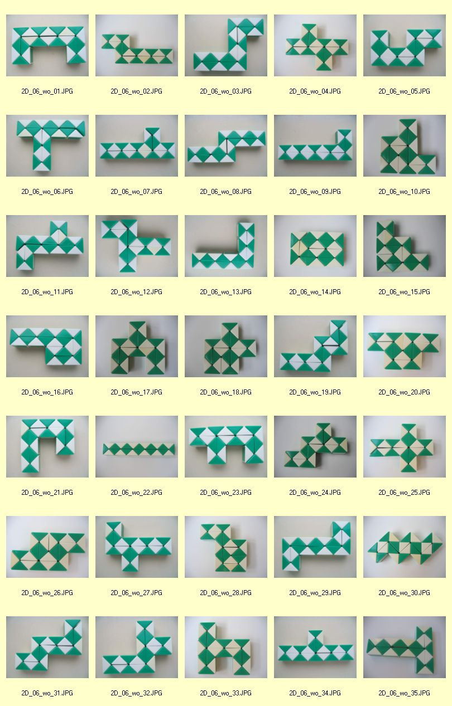2D: seven Quadrate, one hole:
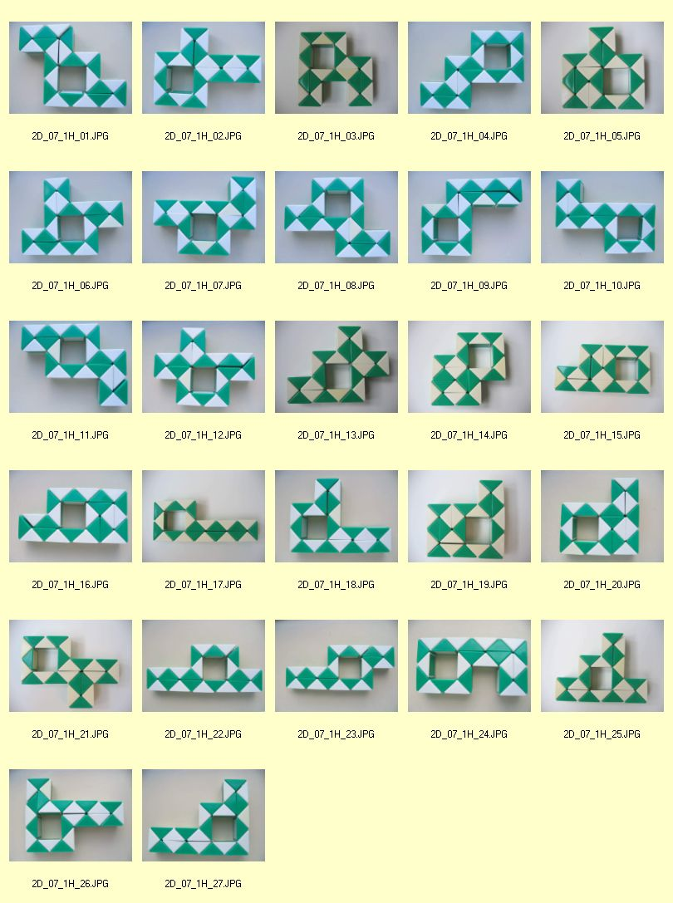2D: eight quadratics, two hole:
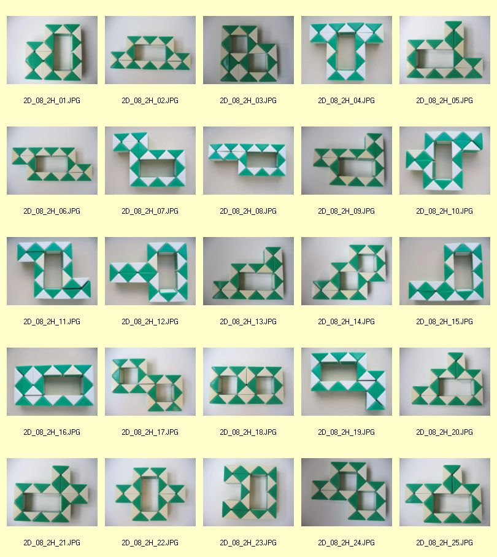2D: nine quadratics, three hole:
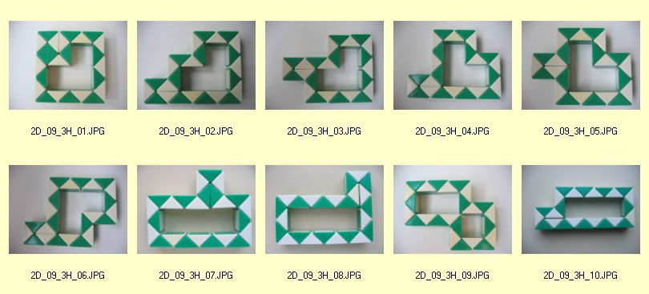2D: ten quadratics, four holes:
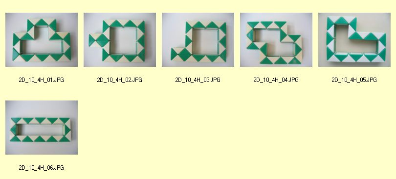2D: eleven quadratics, five holes:
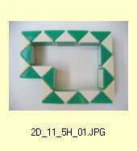2D: twelve quadratics, six holes:
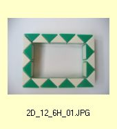2D: more shapes and figures
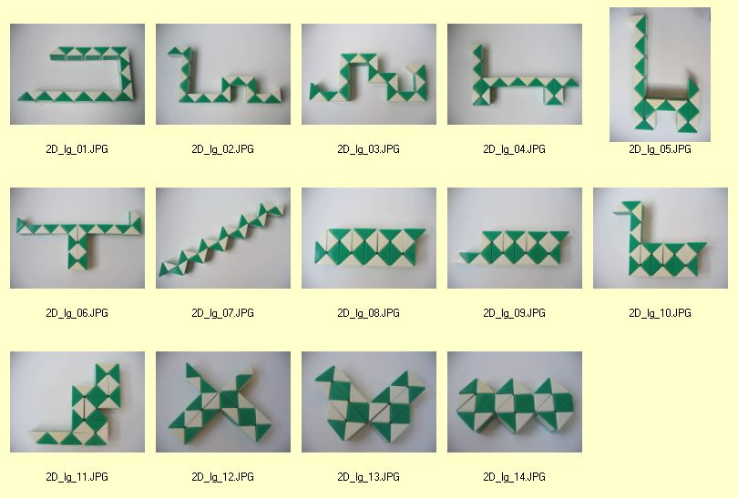3D: part 1
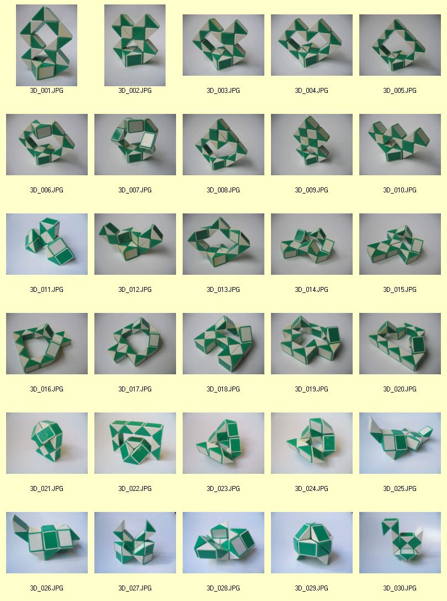3D: part 2
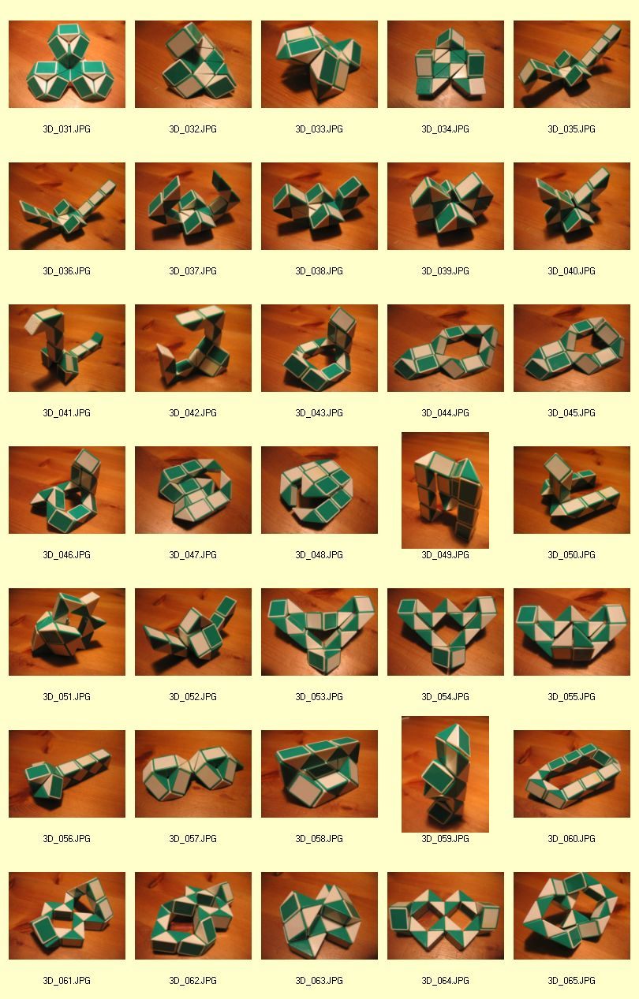3D: part 3
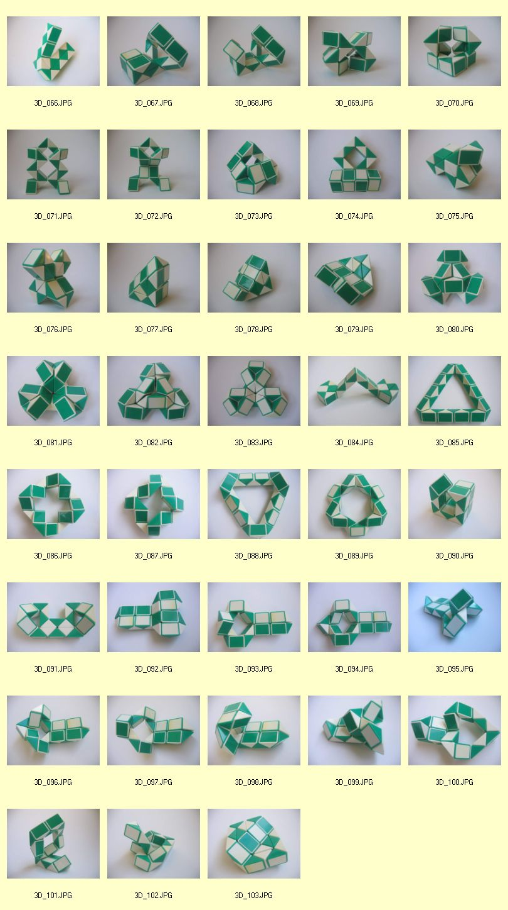2D and 3D Convex shapes:
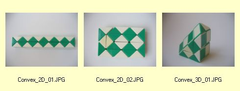Notation of 2D-figures, written by Victor:
In the 2D world there are two ways for a piece to twist: either it is straight or it twists by 90 degrees.
I decided to call a straight piece 0 (zero), a piece twisted by 90 degrees, 2 (two).
Consequently, the figure
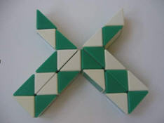is called: 00200022000200022000200
As one can see only the twists, not the pieces, are described. Therefore there are 23 digits above.
It is a long line so I decided to make groups of five with an open space in between. So the figure is written: 00200 02200 02000 22000 200
In a 2D world there are theoretically 8388608 figures possible - 23 twist which can be a 0 or a 2, therefore:
2x2x2x2x2x2x2x2x2x2x2x2x2x2x2x2x2x2x2x2x2x2x2= 8388608
How can we exclude all impossible twists and count the exact number of possible figures? Because a figure starting with 222 is not possible.
Note: Why did I choose to use the numbers 0 and 2? If we want to use this description in a 3D world, we could use 1 for a twist of 45 degrees clockwise and 1' for a twist of 45 degrees counterclockwise.
Remark by Thomas: I use the numbers (0) 1, 2 and 3 for the four possible positions of a prisma. The angles are (0°) 90°, 180° and 270°for the twists. Because prismas are twisted four times to get it to its original position (360° twist in summary).